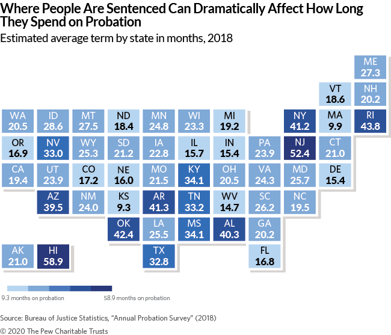

In 2020, Pew reported that, in 2018, the state of Hawaii had the longest average probation lengths in the country at 58.9 months using data

Figure 1 from the 2020 Pew Report on Average Probation Lengths
2 Probation length before and after 2018
To provide a more complete picture of probation length in Hawaii, we analyzed data prior to 2018 and after 2018 using the same data source and method as Pew. Pew relied on data from the Bureau of Justice Statistics Annual Probation Survey and an indirect method to estimate probation length (Patterson & Preston, 2008).
Expand to learn more about the indirect method used by Pew
Estimating probation length using the indirect method described in Patterson and Preston (2008) depends on only three variables: the size of the probation population at the beginning and end of the year, along with the number of exits. These three variables are used to calculate an “exit rate,” and the inverse of this exit rate is the estimated average probation length (Patterson & Preston, 2008).
\[probation.length = \frac{1}{exit.rate}\]
\[exit.rate = \frac{exits}{\frac{1}{2}*(population_{begin} + population_{end})}\] To pump your intuition for why this works, consider a case where the probation population at the beginning of the year is 10,000 and by the end of the year it remains at 10,000.
First, imagine a situation where there are 10,000 exits during the year. Then, \(exit.rate = \frac{10,000}{\frac{1}{2}*(10,000+10,000)}\), which becomes \(exit.rate = 1\). Since, \(probation.length = \frac{1}{exit.rate}\), the estimated probation length is 1 year. One way to think about this is that it’s as if all 10,000 probationers from the beginning of the year came off of probation, having completed a full year at some point during the year, and 10,000 new probationers with terms of 1 year came on.
But now imagine the same situation except there are 5,000 exits. Then \(exit.rate = \frac{5,000}{\frac{1}{2}*(10,000+10,000)}\), which becomes \(exit.rate = \frac{1}{2}\). Therefore, \(probation.length = \frac{1}{1/2}\), which is 2 years. One way to think about this is that it’s as if half of the 10,000 probationers from the beginning of the year came off, having completed their second year of probation, the other half has entered their second year, and another 5,000 new probationers with terms of 2 years came on.
Or imagine the same situation except there are 20,000 exits. Then \(exit.rate = \frac{20,000}{\frac{1}{2}*(10,000+10,000)}\), which becomes \(exit.rate = 2\). Therefore, \(probation.length = \frac{1}{2}\), which is 0.5 years. One way to think about this is that it’s as if all 10,000 probationers from the beginning of the year came off of probation, having completed a 1/2 year at some point during the year, another 10,000 new probationers with terms of 1/2 year came on earlier in the year and came off before the end of the year, and another 10,000 new probationers with terms of 1/2 year came on at some point later in the year.
Pew reported data for 2000 and 2018 (see blue dots in Figure 2). Here we fill in some of the gaps by providing data from the BJS Annual Probation Survey for 2012-2017 and 2019-2023.
Show the code
#load packageslibrary(dplyr)library(ggplot2)#import databjs_prob_HI_filler <-data.frame(year =c(2000, 2001:2011, 2012, 2013, 2014, 2015, 2016, 2017, 2018, 2019, 2020, 2021, 2022, 2023),pop_begin =c(15707, rep(NA, times =11), 22316, 22211, 21576, 20931, 20912, 20516, 19830, 20196, 19619, 17291, 17746, 14341),pop_end =c(15525, rep(NA, times =11), 22211, 21576, 20931, 20912, 20516, 19830, 20196, 19619, 17291, 17746, 14341, 14538),exits =c(6102, rep(NA, times =11), 6297, 5592, 5303, 5061, 4796, 4557, 4077, 4225, 3857, 3981, 5634, 4028))#calculate exit rate and est prob lengthbjs_prob_HI_stats_filler <- bjs_prob_HI_filler %>%mutate(exit_rate = exits/((pop_begin + pop_end)/2),est_prob_term_length_mo =12*1/exit_rate,est_prob_term_length_yr =1/exit_rate,source ="CE_BJS_survey")#plot dataggplot(bjs_prob_HI_stats_filler, aes(x = year, y = est_prob_term_length_mo)) +geom_line() +geom_point() +geom_text(aes(label =paste0(year)), vjust =1, nudge_y =-1) +# geom_text(aes(label = paste0(janitor::round_half_up(est_prob_term_length_mo, digits = 1))), vjust = 0, nudge_y = 1, color = "gray") +# scale_x_continuous(NULL, limits = c(2012, 2021)) +scale_y_continuous("Estimated Probation Term Length (months)", limits =c(0, 60)) +# geom_hline(yintercept = 22.4, color = "red", linetype = 2, size = 1) +geom_point(x =2018, y =22.4, color ="red", size =3) +annotate(geom ="text", x =2018, y =20, vjust =1, label ="National Avg, 2018\n22.4 months") +geom_point(x =2018, y =58.9, color ="blue", size =3) +# annotate(geom = "text", x = 2017, y = 58.9, hjust = 0, vjust = -.5, label = "HI, 2018\n58.9 months") +annotate(geom ="text", x =2017, y =58.9, hjust =0, vjust =-.5, label ="58.9 months") +geom_point(x =2000, y =30.7, color ="blue", size =3) +# annotate(geom = "text", x = 1999, y = 30.7, hjust = 0, vjust = -.5, label = "HI, 2000\n30.7 months") +annotate(geom ="text", x =1999, y =30.7, hjust =0, vjust =-1, label ="30.7 months") +theme_bw() +theme(axis.text =element_text(size =12) ) +ggtitle("Hawaii Probation Term Lengths Across Time") +NULL
The estimated probation length in 2018 appears to represent a peak using BJS survey data.
3 Limitations
3.1 L1. Pew report data is skewed because of data entry lag
As of April 2024, there appears to be significant data entry lag in Caseload Explorer, the case management system used by probation at the Hawaii State Judiciary. Data entry does not appear to be “stable” until 12-24 months after the end of a calendar year.
This was discovered when trying to re-analyze probation term lengths and discovering that the number of exits, or terminations, in a given year depends on when the analysis is run. When it is run a few months after the end of a calendar year, as it is typically done for the BJS Annual Probation Survey, there are typically 1000 to 2000 fewer terminations compared to when it is run 24 or more months later (not including 2022 or 2023, which are too recent to compare).
3.2 Addressing L1: Using data that is stable and relatively complete
To address this, the indirect method was used again but with data extracted from Caseload Explorer in April 2024. For all years except 2022 and 2023, this allowed at least 24 months after the close of the year for probation officers to complete data entry.
Show the code
#---------------------------------------------------------------------------------## load packages -----------------------------------------------------------#---------------------------------------------------------------------------------#library(readxl)library(dplyr)library(ggplot2)library(janitor)#---------------------------------------------------------------------------------###2024 DATA PULLS: exit rate and prob term length calculation --------#---------------------------------------------------------------------------------#prob_HI_update <-read_excel("Stats01_run_in_2024_CY2012-CY2023_2024-04-29.xlsx", col_types ="numeric")prob_HI_update_stats <- prob_HI_update %>%mutate(exit_rate =ifelse(!is.na(pop_begin), exits/((pop_begin + pop_end)/2), NA),est_prob_term_length_mo =ifelse(!is.na(pop_begin), 12*1/exit_rate, NA),est_prob_term_length_yr =ifelse(!is.na(pop_begin), 1/exit_rate, NA),source ="CE_2024")# write.csv(prob_HI_update_stats, paste0("probation_term_length_results_Pew_method_CY12-CY23_", Sys.Date(), ".csv"), row.names = F)#---------------------------------------------------------------------------------## merge BJS old and new CE datasets ---------------------------------------------------------------#---------------------------------------------------------------------------------##first add empty rows for 2001:2011 <- old method, now joining across all three datasetsif(FALSE){bjs_prob_HI_filler <-data.frame(year =c(2000, 2001:2011, 2012, 2013, 2014, 2015, 2016, 2017, 2018, 2019, 2020, 2021, 2022, 2023),pop_begin =c(15707, rep(NA, times =11), 22316, 22211, 21576, 20931, 20912, 20516, 19830, 20196, 19619, 17291, 17746, 14341),pop_end =c(15525, rep(NA, times =11), 22211, 21576, 20931, 20912, 20516, 19830, 20196, 19619, 17291, 17746, 14341, 14538),exits =c(6102, rep(NA, times =11), 6297, 5592, 5303, 5061, 4796, 4557, 4077, 4225, 3857, 3981, 5634, 4028))bjs_prob_HI_stats_filler <- bjs_prob_HI_filler %>%mutate(exit_rate = exits/((pop_begin + pop_end)/2),est_prob_term_length_mo =12*1/exit_rate,est_prob_term_length_yr =1/exit_rate,source ="CE_BJS_survey")}merged_CE_datasets <- bjs_prob_HI_stats_filler %>%bind_rows(prob_HI_update_stats) %>%mutate(across(c(est_prob_term_length_yr, est_prob_term_length_mo, exit_rate), \(x) round_half_up(x, digits =1))) %>%filter(year >=2012)#plot BJS and new CE dataggplot(merged_CE_datasets, aes(x = year, y = est_prob_term_length_mo, color = source)) +geom_line() +geom_point() +geom_text(aes(label =paste0(year)), vjust =1, nudge_y =-1) +scale_y_continuous("Estimated Probation Term Length (months)", limits =c(0, 60)) +scale_color_manual(values =c("black","darkorange"), #set colors manuallybreaks =c("CE_BJS_survey", "CE_2024"), #control the order of the labelslabels =c("Pew Method with old BJS data", "Pew Method with new CE data") #customize labels ) +# geom_hline(yintercept = 22.4, color = "red", linetype = 2, size = 1) +geom_point(x =2018, y =22.4, color ="red", size =3) +annotate(geom ="text", x =2018, y =20, vjust =1, label ="National Avg, 2018\n22.4 months") +geom_point(x =2018, y =58.9, color ="blue", size =3) +# annotate(geom = "text", x = 2017, y = 58.9, hjust = 0, vjust = -.5, label = "HI, 2018\n58.9 months") +annotate(geom ="text", x =2017, y =58.9, hjust =0, vjust =-.5, label ="58.9 months") +geom_point(x =2000, y =30.7, color ="blue", size =3) +# annotate(geom = "text", x = 1999, y = 30.7, hjust = 0, vjust = -.5, label = "HI, 2000\n30.7 months") +annotate(geom ="text", x =1999, y =30.7, hjust =0, vjust =-1, label ="30.7 months") +theme_bw() +theme(axis.text =element_text(size =12),legend.position ="bottom" ) +ggtitle("Hawaii Probation Term Lengths Across Time") +NULL
As can be seen by the orange line, the estimated probation term length appears to drop by at least 12 months if not more for years 2012-2021. Although less time has passed, there also appears to be a decrease by 4-5 months for 2022 and 2023. This suggests that probation term lengths in Hawaii may be lower than originally reported, even for the peak year of 2018.
4 Limitation #2: The Pew method estimates probation term length indirectly
Pew did not have access to individual case data, requiring them to use a method that allowed them to estimate probation term length indirectly using estimates of probation population size and number of exits. How does probation term length change, if at all, when using a direct approach that relies on calculating probation term length at the individual case level and averaging across cases?
5 Fix #2: Using a direct method to estimate probation term length
For each probationer, a probation term length was calculated by taking the difference between the start and termination of their probation term. This calculation is not based on how long they were ordered to serve by a judge but by how long they actually served. Each supervision case was assigned to a calendar year based on the year of the case termination. All of the individual term lengths that were grouped in a given year where then averaged to get an estimate of probation term length.
\[probationer.term.length = probation.end.date - probation.start.date\]\[ estimated.probation.term.length_{year} = \frac{1}{n} \sum_{i = 1}^n({probation.end.date_{i,year} - probation.start.date_{i,year}})\] Where i is an individual probationer, n is the total number of probationers in a cohort, and year is a calendar year.
Individual case data was pulled from CX, the database underlying Caseload Explorer.
Show the code
SELECTO.Pin,convert(date,O.DOB) AS DOB,O.Gender,O.LastName,O.FirstName,CX.dbo.GetPersonAttributeValue(O.PersonId, NULL, 'Person_SID') AS SID,CX.dbo.GetCaseAttributeValue(CA.ChildCaseId, NULL, 'Sup lvl') AS SupervisionLevel, --current/active/most recent supervision levelA3.firstSupLevel AS InitialSupervisionLevel, --initial supervision levelC.Name AS'Caseload Name',CX.dbo.GetCaseAttributeValue(CA.ChildCaseId, NULL, 'CASE_SpecialGroups') AS SpecialGroups,(LEFT(CX.dbo.GetCaseAttributeValue(CA.ParentCaseId, NULL, 'CourtCircuit'), 1) +'/'+LEFT(CX.dbo.GetCaseAttributeValue(CA.ParentCaseId, NULL, 'Court'), 1)) AS CircuitCourt,CA.ChildCaseId,CA.ParentCaseId,CC.CaseNumber AS docCaseNumber, --Parent/Docket Case #Child.CaseNumber AS supCaseNumber, --Child/Supervision Case #CT.Name as'Case Type',CX.dbo.GetCaseAttributeValue(CA.ChildCaseId, NULL, 'Termination') AS Termination,CX.dbo.GetCaseAttributeValue(CA.ChildCaseId, NULL, 'TerminationDate') AS TerminationDate,convert(date,Child.StartDate) as'Supervision Start Date', --current/active/most recent supervision levelA1.minStartDate AS HistoricalSupervisionStartDate, --historical supervision start dateconvert(date,CC.CloseDateTime) AS CloseDateTime,X.TypeName as'Charge Type',X.StatuteDescription,X.OffenseLevel,X.OffenseCode,X.OffenseDegree,X.OffenseDescription,CG.ChargeId,CX.dbo.GetChargeAttributeValue(CG.ChargeId, NULL, 'Dispo') As Disposition,CX.dbo.GetChargeAttributeValue(CG.ChargeId, NULL, 'DispositionDate') As DispositionDateFROMCX.dbo.OffenderInfo OJOIN CX.dbo.CourtCase CC on o.Id= CC.OffenderIdJOIN CX.dbo.CaseCase CA on Ca.ParentCaseId = CC.IdJOIN CX.dbo.CourtCase ChildonChild.Id= CA.ChildCaseIdJOIN CX.dbo.CaseType CT on CT.Id=Child.CaseTypeIdJOIN CX.dbo.Caseload C ON C.Id= O.CaseloadIdJOIN (SELECT CaseId, MIN(Value) AS minStartDate FROM CX.dbo.CaseAttribute WHERE AttributeId =3956GROUPBY CaseId) A1 ON A1.CaseId = CA.ChildCaseId --AttributeId = 3956 -> attributeId for start dateJOIN (SELECT CaseId, MIN(FromTime) AS minFromTime FROM CX.dbo.CaseAttribute WHERE AttributeId =87GROUPBY CaseId) A2 ON A2.CaseId = CA.ChildCaseId --AttributeId = 87 -> attributeId for supervision levelJOIN (SELECT CaseId, FromTime, ValueAS firstSupLevel FROM CX.dbo.CaseAttribute WHERE AttributeId =87) A3 ON A3.CaseId = CA.ChildCaseId AND A3.FromTime = A2.minFromTimeJOIN CX.dbo.CaseCharge CG ON Ca.ParentCaseId = CG.CaseId --on CC.Id/Parent CaseId b/c charges stored at docket levelOuter Apply (Select S.OffenseLevel, OffenseCode, OffenseDegree, OffenseDescription, CCh.TypeName, CCH.StatuteDescription from CX.dbo.Statute s join CX.dbo.charge ch on s.Id= ch.statuteid join CX.Hawaii.CaseChargeInfo cch on cch.Id= ch.idwhere cch.caseid = cc.idAND CG.ChargeId = ch.id) XWHERE--convert TerminationDate to date type in order to filter by date; h/t: https://stackoverflow.com/questions/14397569/filter-data-based-on-date-in-sql; h/t: https://stackoverflow.com/questions/1334143/datetime2-vs-datetime-in-sql-server(CONVERT(date,CX.dbo.GetCaseAttributeValue(CA.ChildCaseId, NULL, 'TerminationDate')) BETWEEN'1/1/2000'AND'12/31/2023') --filter by supervision termination dateAND CT.Id=39--supervision codeORDERBY LastName
Here are the direct estimates of probation term length plotted against the indirect method using the old BJS data and the new CE data.
Show the code
#---------------------------------------------------------------------------------## load packages -----------------------------------------------------------#---------------------------------------------------------------------------------#library(readxl)library(dplyr)library(ggplot2)library(janitor)#---------------------------------------------------------------------------------## import data -------------------------------------------------------------#---------------------------------------------------------------------------------#prob_data <-read.csv("probation_term_length_extract_CY00-CY23_2024-04-29.csv")#---------------------------------------------------------------------------------##Direct Method: case-level data compute data --------------------------------------------------------------#---------------------------------------------------------------------------------#prob_data_clean <- prob_data %>%mutate(prob_start =strptime(HistoricalSupervisionStartDate, "%m/%d/%Y"),prob_term =strptime(TerminationDate, "%m/%d/%Y"),prob_length_days =difftime(prob_term, prob_start, units ="days"),prob_length_yrs =as.double(prob_length_days)/365,cyear =as.factor(format(as.Date(TerminationDate, "%m/%d/%Y"),"%Y")) )# QA1 do start and end dates vary within a supervision case? --------------#Yes -> about 30 cases, at least two instances where case was opened in error/duplicateQA1 <-FALSEif(QA1){ term_length_variation <- prob_data_clean %>%group_by(Pin, supCaseNumber) %>%summarize(term_variation =sd(prob_length_days)) %>%ungroup()#Research in CE: Remarks - Duplicate case in CE. test1 <- prob_data_clean %>%filter(supCaseNumber =='SP-06-1-0998-1')#Research in CE: Remarks - Duplicate Entry test2 <- prob_data_clean %>%filter(supCaseNumber =='SP 2FFC-17-0000072')#Research in CE: note clear... test3 <- prob_data_clean %>%filter(supCaseNumber =='SP-03-0414-1')}# QA2: duplicate rows -----------------------------------------------------#multiple chargesQA2 <-FALSEif(QA2){ test1 <- prob_data_clean %>%filter(LastName =="Ababa") test1 <- prob_data_clean %>%filter(Pin ==426999)}#---------------------------------------------------------------------------------## clean data --------------------------------------------------------------#---------------------------------------------------------------------------------##step 1: remove duplicates -> often due to multiple charges, sometimes multiple dispo dates, multiplying rowsprob_data_clean2 <- prob_data_clean %>%group_by(Pin, supCaseNumber) %>%#count cases, not personsslice_max(prob_length_days, n =1, with_ties =FALSE) %>%ungroup() #%>% # arrange(desc(prob_length_yrs))#QA2.1: check the test cases from above with variation in term length, check that it's pulling the longest term -> conservative----QA2.1<-FALSEif(QA2.1){ test1b <- prob_data_clean2 %>%filter(supCaseNumber =='SP-06-1-0998-1')#Research in CE: Remarks - Duplicate Entry test2b <- prob_data_clean2 %>%filter(supCaseNumber =='SP 2FFC-17-0000072')#Research in CE: note clear... test3b <- prob_data_clean2 %>%filter(supCaseNumber =='SP-03-0414-1')}# QA3: negative term lengths ----------------------------------------------QA3 <-FALSEif(QA3){ neg_term_lengths <- prob_data_clean %>%filter(prob_length_days <0) prob_data_clean3 <- prob_data_clean2 %>%filter(prob_length_days >0)#boxplotggplot(prob_data_clean3, aes(x = cyear, y = prob_length_yrs, fill = cyear)) +# scale_fill_brewer(type = "qual", palette = 1) +# geom_jitter(color="gray27", size=0.3, alpha=0.3) +geom_boxplot(outlier.shape =NA, alpha =0.5) +NULL#violinggplot(prob_data_clean3, aes(x = cyear, y = prob_length_yrs, fill = cyear)) +geom_violin() +# scale_fill_brewer(type = "qual", palette = 1) +# geom_jitter(color="black", size=0.3, alpha=0.1) +NULL#histoggplot(prob_data_clean3, aes(x = prob_length_yrs, fill = cyear)) +geom_histogram(alpha =0.6, binwidth =1) +# scale_fill_brewer(type = "qual", palette = 1) +theme_bw() +facet_wrap(~cyear)NULL}#---------------------------------------------------------------------------------## descriptive stats -------------------------------------------------------#---------------------------------------------------------------------------------##count persons, include negative length terms <- need to be fixed by probation staffprob_data_stats <- prob_data_clean2 %>%# filter(prob_length_yrs < 20) %>% #exploratory analysis filtering out outliarsgroup_by(cyear) %>%summarize(number_of_probationers =n(),mean_yr =mean(prob_length_yrs, na.rm = T), median_yr =median(prob_length_yrs, na.rm = T),sd_yr =sd(prob_length_yrs, na.rm = T),mean_mo =mean(prob_length_yrs, na.rm = T)*12, median_mo =median(prob_length_yrs, na.rm = T)*12,sd_mo =sd(prob_length_yrs, na.rm = T)*12 ) %>%ungroup() %>%mutate(across(mean_yr:sd_mo, \(x) round_half_up(x, digits =1)),mean_probation_term_length =paste0(mean_yr, " years", " (", mean_mo, " months)"),median_probation_term_length =paste0(median_yr, " years", " (", median_mo, " months)"),sd_probation_term_length =paste0(sd_yr, " years", " (", sd_mo, " months)") ) %>%select(calendar_year = cyear, number_of_probationers, mean_mo, mean_yr, mean_probation_term_length:sd_probation_term_length)# write.csv(prob_data_stats, paste0("probation_term_length_CY14-CY23_results_", Sys.Date(), ".csv"), row.names = F)# QA4: Comparing old vs new data pulls ------------------------------------QA4 <-FALSEif(QA4){prob_data_2024_02_06 <-read.csv("probation_term_length_extract_CY00-CY23_2024-02-06.csv")prob_data_clean_2024_02_06 <- prob_data_2024_02_06 %>%mutate(prob_start =strptime(HistoricalSupervisionStartDate, "%m/%d/%Y"),prob_term =strptime(TerminationDate, "%m/%d/%Y"),prob_length_days =difftime(prob_term, prob_start, units ="days"),prob_length_yrs =as.double(prob_length_days)/365,cyear =as.factor(format(as.Date(TerminationDate, "%m/%d/%Y"),"%Y")) )# prob_data_clean2_2024_02_06 <- prob_data_clean_2024_02_06 %>% # group_by(Pin, supCaseNumber) %>% #count cases, not persons# slice_max(prob_length_days, n = 1, with_ties = FALSE) %>% # ungroup() prob_data_2024_03_19 <-read.csv("probation_term_length_extract_CY00-CY23_2024-03-19.csv")prob_data_clean_2024_03_19 <- prob_data_2024_03_19 %>%mutate(prob_start =strptime(HistoricalSupervisionStartDate, "%m/%d/%Y"),prob_term =strptime(TerminationDate, "%m/%d/%Y"),prob_length_days =difftime(prob_term, prob_start, units ="days"),prob_length_yrs =as.double(prob_length_days)/365,cyear =as.factor(format(as.Date(TerminationDate, "%m/%d/%Y"),"%Y")) )# prob_data_clean2_2024_03_19 <- prob_data_clean_2024_03_19 %>% # group_by(Pin, supCaseNumber) %>% #count cases, not persons# slice_max(prob_length_days, n = 1, with_ties = FALSE) %>% # ungroup() prob_data_2024_04_03 <-read.csv("probation_term_length_extract_CY00-CY23_2024-04-03.csv")prob_data_clean_2024_04_03 <- prob_data_2024_04_03 %>%mutate(prob_start =strptime(HistoricalSupervisionStartDate, "%m/%d/%Y"),prob_term =strptime(TerminationDate, "%m/%d/%Y"),prob_length_days =difftime(prob_term, prob_start, units ="days"),prob_length_yrs =as.double(prob_length_days)/365,cyear =as.factor(format(as.Date(TerminationDate, "%m/%d/%Y"),"%Y")) )# prob_data_clean2_2024_04_03 <- prob_data_clean_2024_04_03 %>% # group_by(Pin, supCaseNumber) %>% #count cases, not persons# slice_max(prob_length_days, n = 1, with_ties = FALSE) %>% # ungroup() anti_join_02_to_03 <- prob_data_clean_2024_02_06 %>%select(-Caseload.Name, -SpecialGroups) %>%#caseload name can change to NULL after case closes, so ignore thisanti_join(prob_data_clean_2024_03_19) %>%group_by(Pin, supCaseNumber) %>%#count cases, not personsslice_max(prob_length_days, n =1, with_ties =FALSE) %>%ungroup()anti_join_03_to_02 <- prob_data_clean_2024_03_19 %>%select(-Caseload.Name, -SpecialGroups) %>%#caseload name can change to NULL after case closes, so ignore thisanti_join(prob_data_clean_2024_02_06) %>%group_by(Pin, supCaseNumber) %>%#count cases, not personsslice_max(prob_length_days, n =1, with_ties =FALSE) %>%ungroup()# anti_join_03_to_04 <- prob_data_clean_2024_03_19 %>% # select(-Caseload.Name, -SpecialGroups) %>% #caseload name can change to NULL after case closes, so ignore this# anti_join(prob_data_clean_2024_04_03) %>% # group_by(Pin, supCaseNumber) %>% #count cases, not persons# slice_max(prob_length_days, n = 1, with_ties = FALSE) %>%# ungroup()# # anti_join_04_to_03 <- prob_data_clean_2024_04_03 %>% # select(-Caseload.Name, -SpecialGroups) %>% #caseload name can change to NULL after case closes, so ignore this# anti_join(prob_data_clean_2024_03_19) %>% # group_by(Pin, supCaseNumber) %>% #count cases, not persons# slice_max(prob_length_days, n = 1, with_ties = FALSE) %>%# ungroup()anti_join_02_to_04 <- prob_data_clean_2024_02_06 %>%select(-Caseload.Name, -SpecialGroups) %>%#caseload name can change to NULL after case closes, so ignore thisanti_join(prob_data_clean_2024_04_03, by =c("Pin", "ChildCaseId", "prob_start", "prob_term")) %>%group_by(Pin, supCaseNumber) %>%#count cases, not personsslice_max(prob_length_days, n =1, with_ties =FALSE) %>%ungroup()anti_join_04_to_02 <- prob_data_clean_2024_04_03 %>%select(-Caseload.Name, -SpecialGroups) %>%#caseload name can change to NULL after case closes, so ignore this# anti_join(prob_data_clean_2024_02_06) %>%anti_join(prob_data_clean_2024_02_06, by =c("Pin", "ChildCaseId", "prob_start", "prob_term")) %>%group_by(Pin, supCaseNumber) %>%#count cases, not personsslice_max(prob_length_days, n =1, with_ties =FALSE) %>%ungroup()anti_join_04_to_02 %>%count(cyear)#example 1: case term in 9/23 but entered in CE on 02/24tmp_02 <- prob_data_2024_02_06 %>%filter(Pin =="518058")tmp_03 <- prob_data_2024_03_19 %>%filter(Pin =="518058")#example 2 -> couldn't figure out...hold up:# Id OffenderId EnteredByPId FromTime CaseNumber CloseDateTime CaseTypeId BookingId StartDate EndDate JurisdictionLId DispositionId Sealed LastModified REC_ID# 697576 176995 111855 2023-06-07 15:27:54.143 SP 5DTC-23-000801-1 2023-12-08 11:08:00.000 39 NULL 2023-06-06 00:00:00.000 2023-12-05 00:00:00.000 NULL NULL 0 2024-02-09 12:36:41.943 NULLtmp_02 <- prob_data_2024_02_06 %>%filter(Pin =="579792")tmp_03 <- prob_data_2024_03_19 %>%filter(Pin =="579792")#example 3: case term in 6/21 but entered in CE on 03/24tmp_02 <- prob_data_2024_02_06 %>%filter(Pin =="579792")tmp_03 <- prob_data_2024_03_19 %>%filter(Pin =="579792")#example 4: case term in 11/23 but entered in CE on 03/24tmp_02 <- prob_data_2024_02_06 %>%filter(Pin =="569710")tmp_03 <- prob_data_2024_03_19 %>%filter(Pin =="569710")#example 5: case term in 04/23 but entered in CE on 03/24tmp_02 <- prob_data_2024_02_06 %>%filter(Pin =="512076")tmp_03 <- prob_data_2024_03_19 %>%filter(Pin =="512076")#example 6: formatting of docCaseNumber got converted into a date for 2024/02/06, import issue?tmp_02 <- prob_data_2024_02_06 %>%filter(Pin =="513305")tmp_03 <- prob_data_2024_03_19 %>%filter(Pin =="513305")#example 7: there was a change in Special Group, was showing up in 2 but not 3, fixed select to exclude SpecialGroupstmp_02 <- prob_data_2024_02_06 %>%filter(Pin =="2992")tmp_03 <- prob_data_2024_03_19 %>%filter(Pin =="2992")}#---------------------------------------------------------------------------------## merge three datasets ---------------------------------------------------------------#---------------------------------------------------------------------------------#merge_method <-"bind_row_method"if(merge_method =="join_method"){#step 1a - join BJS (CE) data, new CE data, and new CX data merged_datasets <- bjs_prob_HI_stats_filler %>%right_join(prob_HI_update_stats, by ="year", suffix =c("_bjs_CE", "_ac_CE")) %>%mutate(year =as.factor(year)) %>%left_join(prob_data_stats, by =c("year"="calendar_year"))}elseif(merge_method =="bind_row_method"){#step 1b - row bind BJS (CE) data, new CE data, and new CX data merged_datasets <- prob_data_stats %>%select(year = calendar_year, exits = number_of_probationers, est_prob_term_length_yr = mean_yr, est_prob_term_length_mo = mean_mo) %>%mutate(year =as.numeric(levels(year))[year],source ="CX_2024") %>%bind_rows(bjs_prob_HI_stats_filler, prob_HI_update_stats) %>%mutate(across(c(est_prob_term_length_yr, est_prob_term_length_mo, exit_rate), \(x) round_half_up(x, digits =1))) %>%filter(year >=2012)}#---------------------------------------------------------------------------------## plot data ---------------------------------------------------------------#---------------------------------------------------------------------------------#ggplot(merged_datasets, aes(x = year, y = est_prob_term_length_mo, color = source)) +geom_line() +geom_point() +# geom_line(data = prob_HI_update_stats, aes(x = year, y = est_prob_term_length_mo), # color = "orange",# alpha = if_else(prob_HI_update_stats$year >= 2021, 0.3, 1)) +# geom_point(data = prob_HI_update_stats, #data = prob_HI_update_stats %>% filter(year >= 2012), # # aes(x = year, y = est_prob_term_length_mo, alpha = -year, size = year), # aes(x = year, y = est_prob_term_length_mo), # color = "orange",# alpha = if_else(prob_HI_update_stats$year >= 2022, 0.3, 1)) + #alpha = ((prob_HI_update_stats$year-2012)/(2023-2012))*(1-0.5)+0.5geom_text(aes(label =paste0(year)), vjust =1, nudge_y =-1) +# geom_text(aes(label = paste0(janitor::round_half_up(est_prob_term_length_mo, digits = 1))), vjust = 0, nudge_y = 1, color = "gray") +# scale_x_continuous(NULL, limits = c(2012, 2021)) +scale_y_continuous("Estimated Probation Term Length (months)", limits =c(0, 60)) +scale_color_manual(values =c("black","darkorange", "gold"), #set colors manuallybreaks =c("CE_BJS_survey", "CE_2024", "CX_2024"), #control the order of the labelslabels =c("Pew Method with old BJS data", "Pew Method with new CE data", "Direct method with new CX data") #customize labels ) +# geom_hline(yintercept = 22.4, color = "red", linetype = 2, size = 1) +geom_point(x =2018, y =22.4, color ="red", size =3) +annotate(geom ="text", x =2018, y =20, vjust =1, label ="National Avg, 2018\n22.4 months") +geom_point(x =2018, y =58.9, color ="blue", size =3) +# annotate(geom = "text", x = 2017, y = 58.9, hjust = 0, vjust = -.5, label = "HI, 2018\n58.9 months") +annotate(geom ="text", x =2017, y =58.9, hjust =0, vjust =-.5, label ="58.9 months") +geom_point(x =2000, y =30.7, color ="blue", size =3) +# annotate(geom = "text", x = 1999, y = 30.7, hjust = 0, vjust = -.5, label = "HI, 2000\n30.7 months") +annotate(geom ="text", x =1999, y =30.7, hjust =0, vjust =-1, label ="30.7 months") +theme_bw() +theme(axis.text =element_text(size =12),legend.position ="bottom" ) +ggtitle("Hawaii Probation Term Lengths Across Time") +NULL
The direct method with new data and the indirect method with new data yield similar, though not identical, results, both suggesting estimated probation term lengths are lower compared to those estimates using an indirect method with data suffering from data entry lag.
6 Limitation #3: The Pew method aggregates felony and non-felony probationers
Consider a room filled with 100 government workers and 100 tech industry multi-millionaires The average salary in the room ends up not representing anyone.
The probation term lengths for felony and misdemeanor probationers are like salaries in this example. Felony and misdemeanor probationers are in effect two different sub-populations with distinct distributions for term length, and conceptually, mixing them and taking an average can produce a distorted representation of probation term length. When there are two sub-groups in a dataset, it is often conceptually clearer to disaggregate the data by group and compute separate means for each.
7 Fix #3: Disaggregating felony and non-felony using a direct method and stable data
Disaggregating data by offense severity yields the following results: